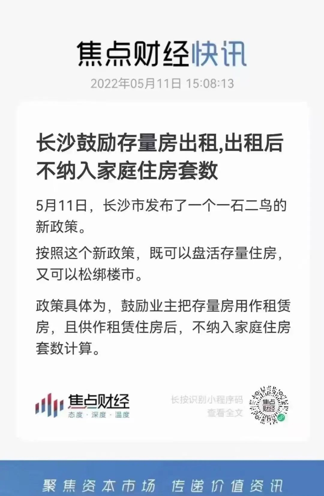
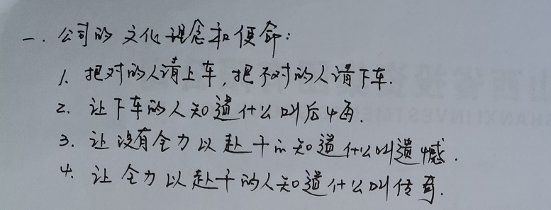
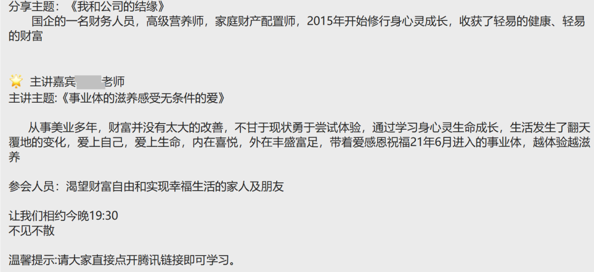
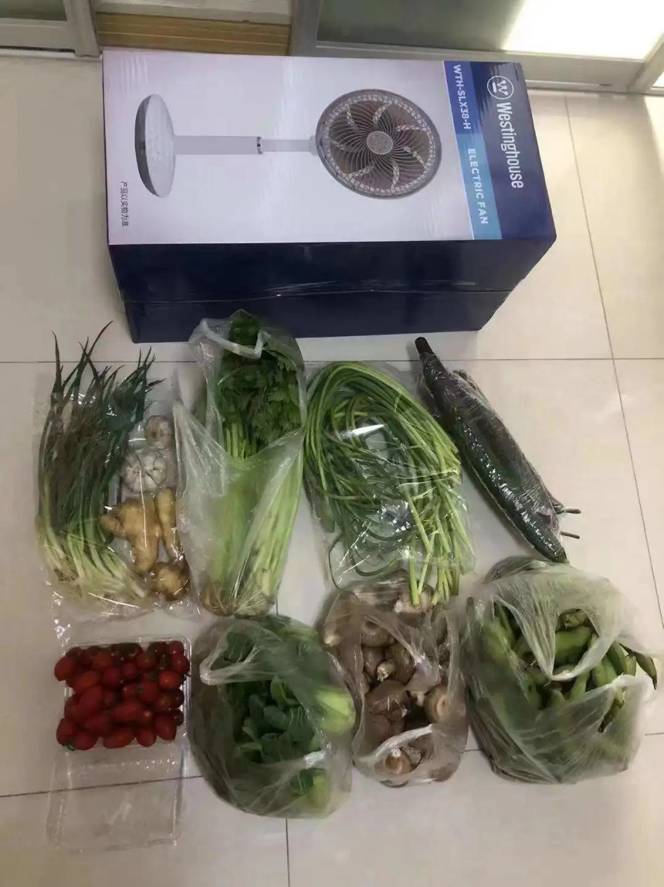
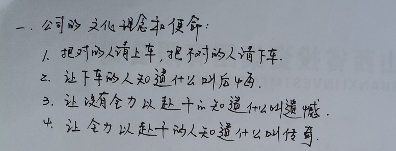
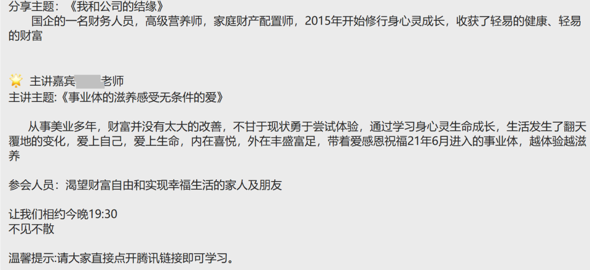
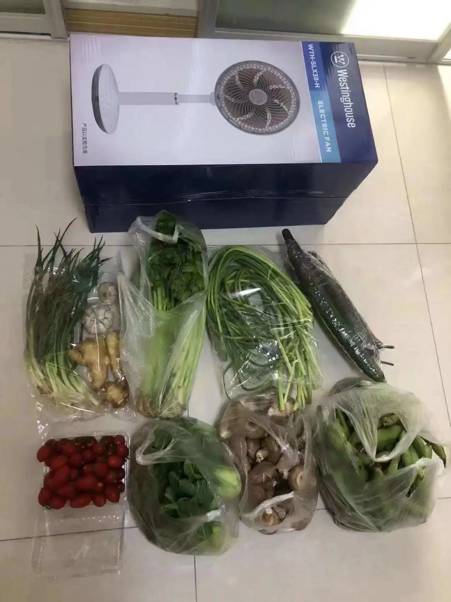
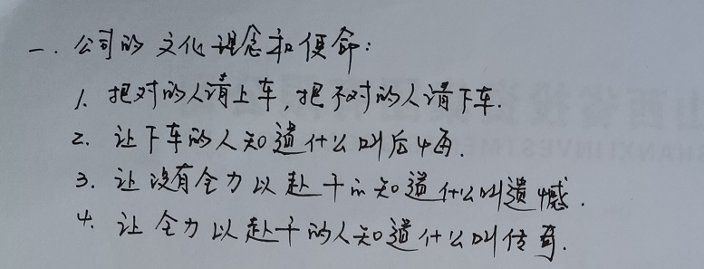
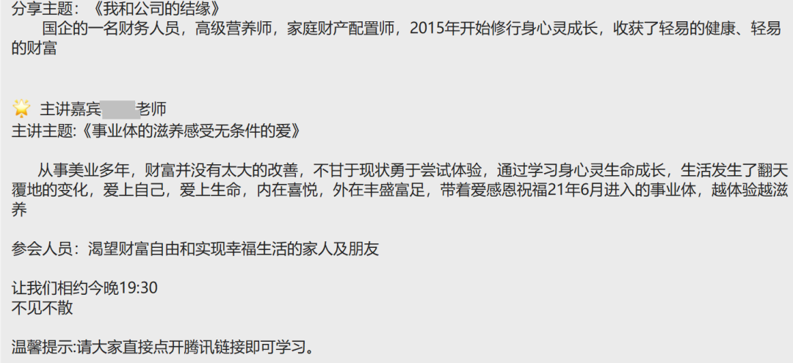
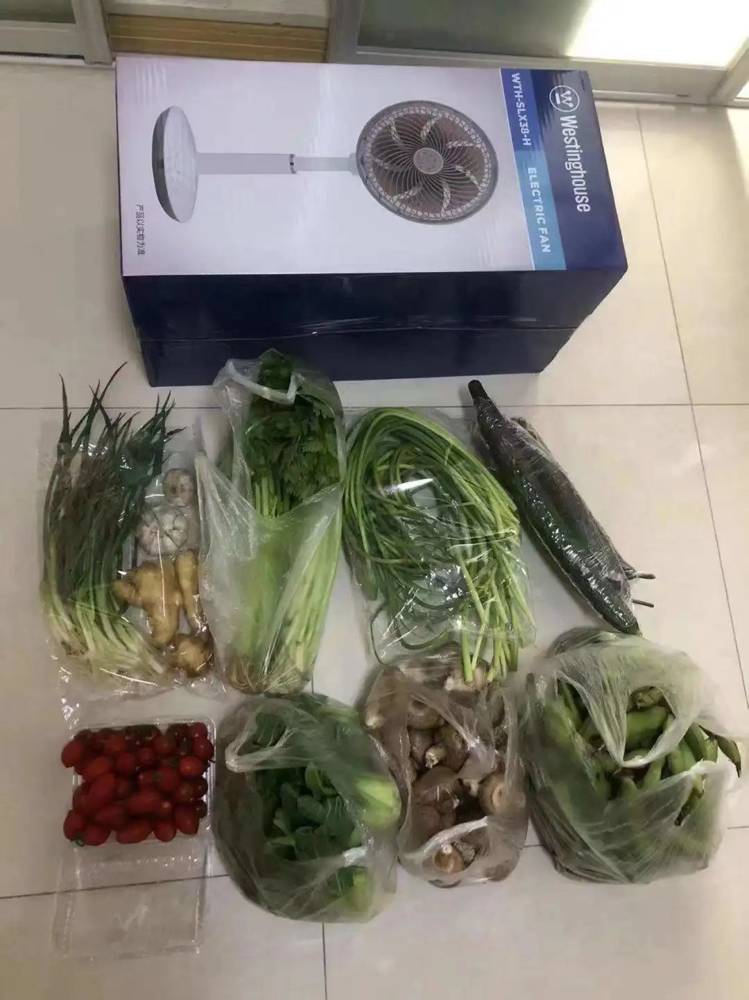

模范街道不仅发菜，还发电风扇！
原创 V姐万事屋 V姐来了 2022-05-11 21:42 原文链接(长) 原文链接(短)Hi, 我是V姐。
今天长沙一则关于楼市的新闻引人注目：

长沙你怎么搞的？怎么也叛变了？
作为一直的楼市调控模范生，深圳还去专门学习长沙模式，回来把楼市按住。这次长沙本沙反而出了一个放松限购的奇招。
这个政策的核心，是帮你 **以租代售** 腾房票。
比如你现在想买房，但是家庭限购了。
那么你可以把现有房子跟政策里指定的企业签租约，把这个房子委托他们租出去。
这样你收获租金，同时也有购房资格了。
你可能会说，为啥不直接放开限购呢？
V姐个人觉得现有这个政策相对直接放开限购，至少有3点好处：
**1、这个政策把大量二手房圈进租赁市场，而不是买卖市场。**
那么市场上可供出售的二手房就少了，供给少了，一方面托住房价，一方面促进老百姓去买新房。新房卖得动，房企才有钱拿地，地方政府才有收入，因此新房销售才是地方政府和房企的命脉。
**2、这个政策针对的是已经有房的人群，保险系数高。**
这些人群相对无房户来讲，资产状况往往更好一些。他们再买入资产，对于银行来说，坏账风险低。今年虽然定向放水，但是银行最担心的就是借出去的钱到时候收不回来，因此贷给相对有钱的人，会更保险。
**3、这个政策对于租房人士也有好处。**
目前政策规定，房子委托给长房集团或者长沙建发集团后，签订不低于10年的租约，才可以不纳入家庭总套数。长沙2025年的租赁市场，住房不低于15万套。这样的话，对于长租客来说，房源更稳定，供给充足，租金市场也会更平稳。
不得不给长沙鼓鼓掌，人家调控就是真调控，说按住房价就按住。
人家放开限购，也是这么一石三鸟，促进市场平稳健康地发展。
长沙今年已经第三次放松楼市，前面分别是降低落户门槛【现在大专可直接落户买房】，把限购区二套房限制时间从6年缩短到4年。
这次也不会是最后一次，我估计后面还会有其他政策继续放松。
长沙的小伙伴，请密切关注核心区的成交量。
* * *
最近经济形势不好，骗子又多了起来。
大家知道，现在的经济增速，国家要保5.5的增长千难万难。
那么多浓眉大眼的基金经理，今年业绩都血崩，亏损40%以上。
但是呢，不少小城市，还有线上倒是出现了许多月收益10%以上的暴利项目。
最近几天，我有好几个学生都来问我一些理财项目是否靠谱。
比如某个量子计算项目。
声称自己有全球领先的量子科技，用于金融领域，每月稳定套利10%，利息每月给到投资人。
我问：
- 他公司牌照有吗？
- 产品在中国证券投资基金协会备案了吗？
- 产品名称是啥？
- 托管银行是哪个？
答：啊，我不清楚，是人家介绍给我爸的，他已经买了3万 朋友们，量子计算方面的科技确实高级，应用在金融领域也确实是未来的趋势，但是如果真的成功，我不太相信它会如此低调，在非一线城市追着老年人介绍购买。
这是常识方面的考量。
再者，不要说月息10%，年化收益10%的产品，也不可能保证收益。如果真的有什么技术，实现了这个收益，那么不要说3万的门槛，300万都嫌低了。
这种产品不可能对外发售。我知道一些大佬小范围募资的超高收益产品，很多门槛是8位数。
还有一个产品就更无语了。
一个社群成员问我，他爸爸被亲戚拉进一个组织，说是做外汇交易的，收益很高。
我说什么公司，什么产品？介绍发给我看看。
结果是爸爸听课后手写的笔记，真的很认真，大家看这家公司的文化理念和使命：

1、把对的人请上车，把不对的人请下车——【我们精准筛选客户】
2、让下车的人知道什么叫后悔——【利用贪婪激发失去的恐惧】
3、让没有全力以赴干的知道什么叫遗憾——【继续PUA】
4、让全力以赴干的人知道什么叫传奇——【一夜暴富的大饼真诱人】
朋友们，你们觉得这是一家正规投资公司的理念和使命吗？
我又问这个投资人的介绍有吗？

我看了大受震撼。
现在各种心灵成长，修心体验的课很多，本身没什么，大家压力都很大嘛。
但是把这个跟财富自由结合在一起的，是什么脑回路？
轻易的财富，内在喜悦，外在丰盛富足，确实听起来诱人，怎么最后归结到让人交钱跟着你炒外汇呢？
我身在互联网行业创业，接触和见到的项目很多，各种骚操作也见识了不少。
老实讲，能让你又轻松赚钱，又幸福喜悦，身心灵全面成长，天天感恩祝福的，不是传销就是骗子。
这些骗局很多都是精准针对老年人的，弄些老年人不懂的名词，利用老人想要多赚点钱补贴儿女，又因为生活单调内心有一些空虚的心理，真的成功率很高。
朋友们，今年大家挣钱难，骗子也冲业绩了，大家自己擦亮眼睛，帮家里老人也要把把关。
最后，今天又是被别人发的物资刺激的一天，人家除了菜，还发电风扇！

我的第一反应是人家街道真有钱！
再一想，不能吧，这是准备要封到什么时候
朋友们，量子计算方面的科技确实高级，应用在金融领域也确实是未来的趋势，但是如果真的成功，我不太相信它会如此低调，在非一线城市追着老年人介绍购买。
这是常识方面的考量。
再者，不要说月息10%，年化收益10%的产品，也不可能保证收益。如果真的有什么技术，实现了这个收益，那么不要说3万的门槛，300万都嫌低了。
这种产品不可能对外发售。我知道一些大佬小范围募资的超高收益产品，很多门槛是8位数。
还有一个产品就更无语了。
一个社群成员问我，他爸爸被亲戚拉进一个组织，说是做外汇交易的，收益很高。
我说什么公司，什么产品？介绍发给我看看。
结果是爸爸听课后手写的笔记，真的很认真，大家看这家公司的文化理念和使命：

1、把对的人请上车，把不对的人请下车——【我们精准筛选客户】
2、让下车的人知道什么叫后悔——【利用贪婪激发失去的恐惧】
3、让没有全力以赴干的知道什么叫遗憾——【继续PUA】
4、让全力以赴干的人知道什么叫传奇——【一夜暴富的大饼真诱人】
朋友们，你们觉得这是一家正规投资公司的理念和使命吗？
我又问这个投资人的介绍有吗？

我看了大受震撼。
现在各种心灵成长，修心体验的课很多，本身没什么，大家压力都很大嘛。
但是把这个跟财富自由结合在一起的，是什么脑回路？
轻易的财富，内在喜悦，外在丰盛富足，确实听起来诱人，怎么最后归结到让人交钱跟着你炒外汇呢？
我身在互联网行业创业，接触和见到的项目很多，各种骚操作也见识了不少。
老实讲，能让你又轻松赚钱，又幸福喜悦，身心灵全面成长，天天感恩祝福的，不是传销就是骗子。
这些骗局很多都是精准针对老年人的，弄些老年人不懂的名词，利用老人想要多赚点钱补贴儿女，又因为生活单调内心有一些空虚的心理，真的成功率很高。
朋友们，今年大家挣钱难，骗子也冲业绩了，大家自己擦亮眼睛，帮家里老人也要把把关。
最后，今天又是被别人发的物资刺激的一天，人家除了菜，还发电风扇！

我的第一反应是人家街道真有钱！
再一想，不能吧，这是准备要封到什么时候
朋友们，量子计算方面的科技确实高级，应用在金融领域也确实是未来的趋势，但是如果真的成功，我不太相信它会如此低调，在非一线城市追着老年人介绍购买。
这是常识方面的考量。
再者，不要说月息10%，年化收益10%的产品，也不可能保证收益。如果真的有什么技术，实现了这个收益，那么不要说3万的门槛，300万都嫌低了。
这种产品不可能对外发售。我知道一些大佬小范围募资的超高收益产品，很多门槛是8位数。
还有一个产品就更无语了。
一个社群成员问我，他爸爸被亲戚拉进一个组织，说是做外汇交易的，收益很高。
我说什么公司，什么产品？介绍发给我看看。
结果是爸爸听课后手写的笔记，真的很认真，大家看这家公司的文化理念和使命：

1、把对的人请上车，把不对的人请下车——【我们精准筛选客户】
2、让下车的人知道什么叫后悔——【利用贪婪激发失去的恐惧】
3、让没有全力以赴干的知道什么叫遗憾——【继续PUA】
4、让全力以赴干的人知道什么叫传奇——【一夜暴富的大饼真诱人】
朋友们，你们觉得这是一家正规投资公司的理念和使命吗？
我又问这个投资人的介绍有吗？

我看了大受震撼。
现在各种心灵成长，修心体验的课很多，本身没什么，大家压力都很大嘛。
但是把这个跟财富自由结合在一起的，是什么脑回路？
轻易的财富，内在喜悦，外在丰盛富足，确实听起来诱人，怎么最后归结到让人交钱跟着你炒外汇呢？
我身在互联网行业创业，接触和见到的项目很多，各种骚操作也见识了不少。
老实讲，能让你又轻松赚钱，又幸福喜悦，身心灵全面成长，天天感恩祝福的，不是传销就是骗子。
这些骗局很多都是精准针对老年人的，弄些老年人不懂的名词，利用老人想要多赚点钱补贴儿女，又因为生活单调内心有一些空虚的心理，真的成功率很高。
朋友们，今年大家挣钱难，骗子也冲业绩了，大家自己擦亮眼睛，帮家里老人也要把把关。
最后，今天又是被别人发的物资刺激的一天，人家除了菜，还发电风扇！

我的第一反应是人家街道真有钱！
再一想，不能吧，这是准备要封到什么时候